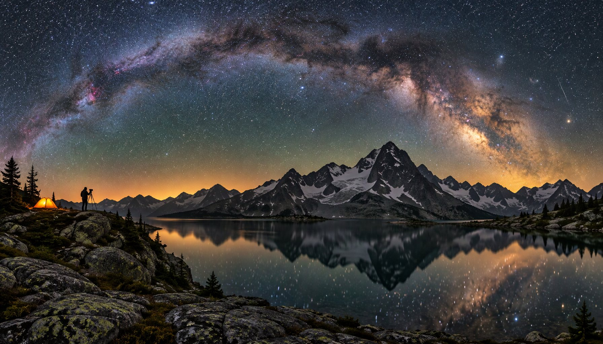
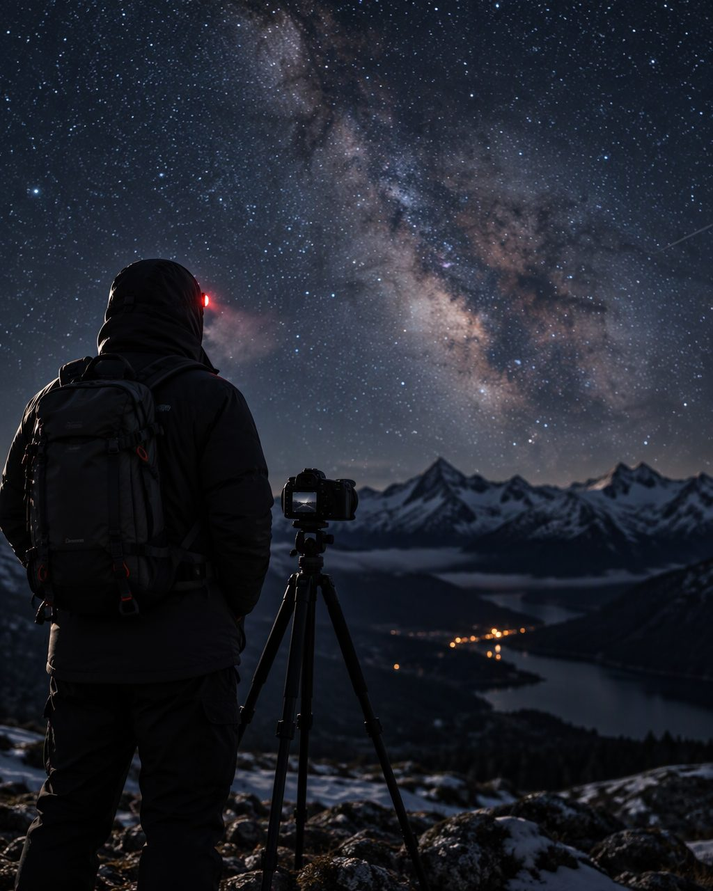

Nightscape & deep-sky photography · Since 2016
Chasing
the dark.
Long exposures, quiet places, and the twelve hours a day most people sleep through. Work by Mira Solvang, from the Norwegian Arctic to the high desert.
Lyngen Alps, Norway · 18 frames · 24mm
Scroll01 — Selected work
Twelve hours
at a time.
Six frames from two seasons in the field. Every image is stacked from frames made on the same night, in the same place.
The sky doesn’t perform. It waits. You show up, you stay past the point of reason, and once in a while it hands you something no one has seen before.
- Nights in the field
- 214
- Countries photographed
- 09
- Coldest shoot
- −31°C
- Frames stacked
- 6,400+
02 — Field journal
Notes from
the small hours.
Short dispatches written in the tent, usually with cold hands. No itinerary, no gear reviews — just what the night did.
-
New Mexico
Waiting for the moon
White Sands, 21:40. The moon came up eleven minutes later than the forecast promised, which is eleven minutes I spent deciding the dunes were better without it.
-
Nevada
Four hours of circles
The old dome at Mount Wilson hasn’t tracked anything in decades. I gave it four hours of sky anyway, and it held every one of them perfectly still.
-
Lyngen
Cabin, minus nineteen
The thermometer quit at −19°C. I kept the spare battery inside my jacket and the shutter open for twenty seconds at a time, and the window stayed lit the whole night.

03 — About
I photograph
the waiting.
I’m Mira Solvang, a nightscape and deep-sky photographer based in Tromsø, Norway. I grew up an hour north of the Arctic Circle, where darkness isn’t an inconvenience — it’s half the year.
Since 2016 I’ve been making long-exposure work at the edges of the map: aurora coastlines, desert arches, abandoned observatories and the occasional back garden. Most frames take a night to plan and a night to make. Some take four.
- Based
- Tromsø, Norway — 69°N
- Available for
- Editorial, tourism boards & print commissions
- Prints
- Archival pigment on cotton rag, editions of 25
- Field kit
- Full-frame mirrorless, 14–400mm, star tracker
04 — Contact
Let’s plan
a night.
Commissions, prints, workshops, or a collaboration that needs a very patient collaborator. I answer every message within two days — sometimes from a tent, so forgive the delay.